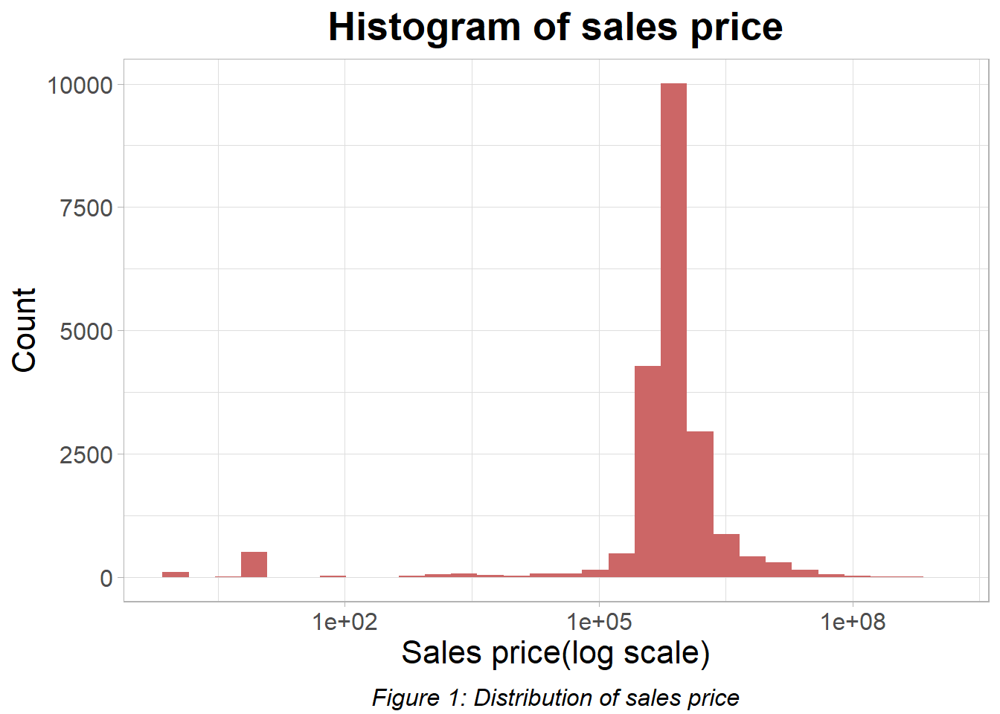

Chapter 3 Data transformation
For the Rolling Sales data(sales data of properties in New York City that sold from 2019-11-01 to 2020-10-31), we manually engineered features on the basis of the existing features as below to accommodate the research questions of this study. 1)Given the tax class and building class of a property at the time of sale and also at present, we introduced whether or not the tax class has changed since sales as well as whether or not the building class has changed since sales. 2)Given the year built for each property, we created a feature history at sale time for each property where it is calculated as the year when the property is sold minus the year the property was built. 3) Compared to the sales price of a property, unit price(price per square feet) is a more objective reflection of a property’s price level as it is not influenced by the area of a property. Therefore, we define unit price of a property as the sales price divided by the gross square feet of the property(which is industry convention), and when gross square feet is 0, we would substitute it with land square feet.
Within the property sales data set which contains 35873 records, there are 15178 sales records with sales price 0. Such transactions indicate transfer of ownership without a cash consideration and therefore is not included in the study since our interest lies in the commercial aspect of the property sales market. Furthermore, we extended the idea to that records with oddly low sales price should also not be included as such transactions although do have a transfer of cash flow do not indicate a typical commercial property trading. Therefore we decided to set a threshold and ignore all records with sales price lower than that threshold. The distribution of the sales price after excluding all transactions with price 0 is shown in figure 1. We observe that the distribution displayed on a log scale is strongly left skewed;most of the transactions have a sales price at around seven figures while the minimum is 1 figure and the maximum is 9 figures. Therefore we decided to exclude records with sales price below five figures(10,000). By such an exclusion, we reduced a large amount of skewness of the data as the number of figures of the sales price from the rest of the records are approximately symmetric with a mean of seven figures. Hence, 10,000 seemed a reasonable threshold. Specifically, beyond the 15,178 records with sales price 0, there are 838 sales records with sales price between 1(inclusive) and 10,000. We regarded these 16016 records as unhelpful transactions and ignored them in our further analysis.

We preprocessed the property sales data of year 2019 in the same fashion as we processed our Rolling sales data. However, although we have full year sales data of 2019, we only included records from 2019-03-01 to 2019-10-31 for comparison purposes since we hoped to compare to the same period in 2020 and learn how COVID-19 migh have influenced the property sales market in NYC. (Recall that COVID-19 related data for NYC are availabel starting from 2020-02-29 and the rolling sales data only contains records until 2020-10-31).